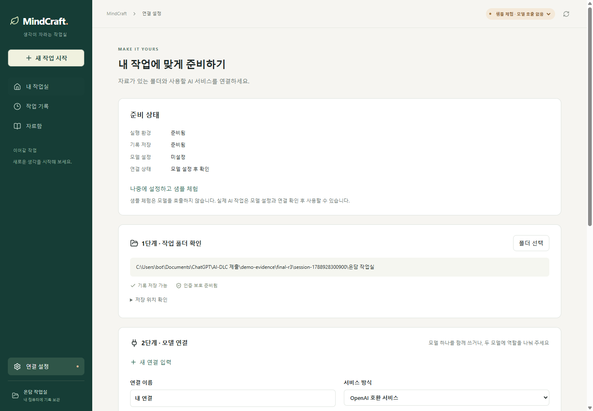
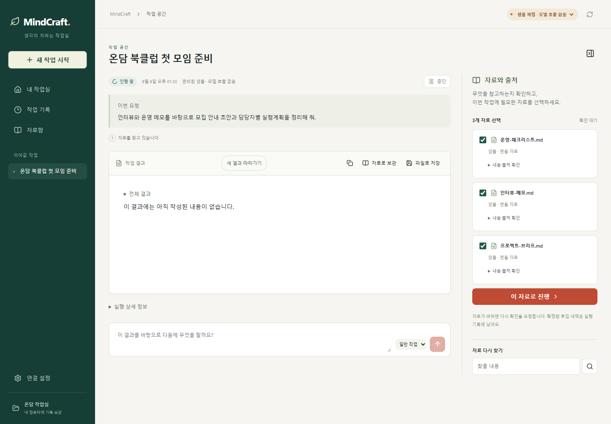
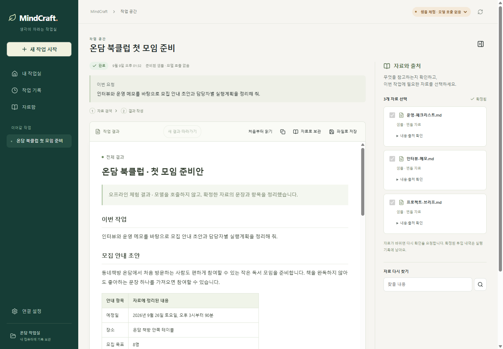
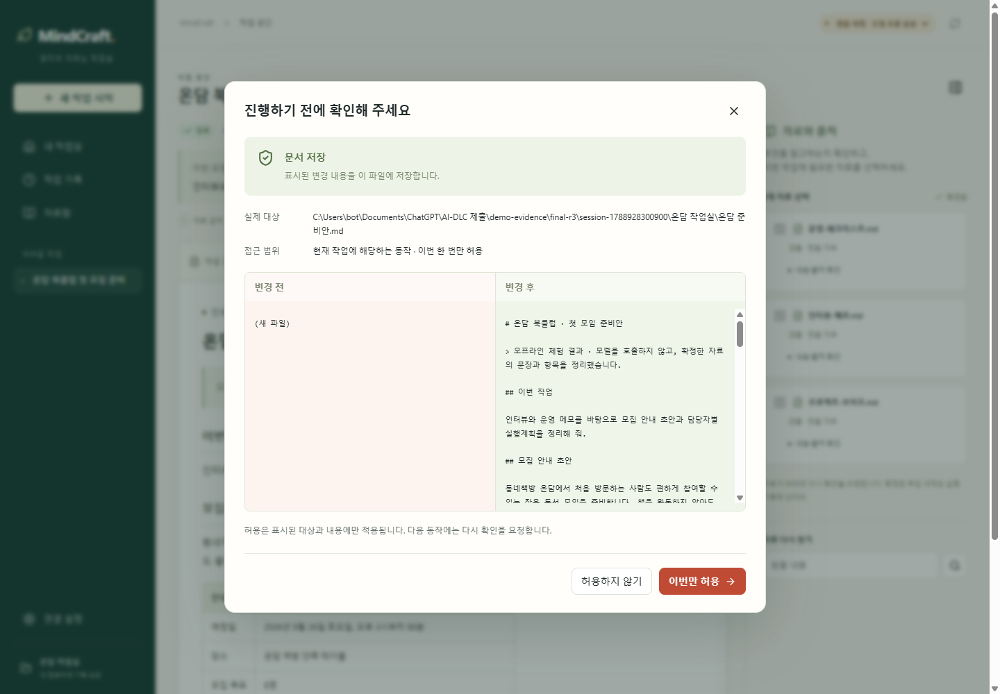
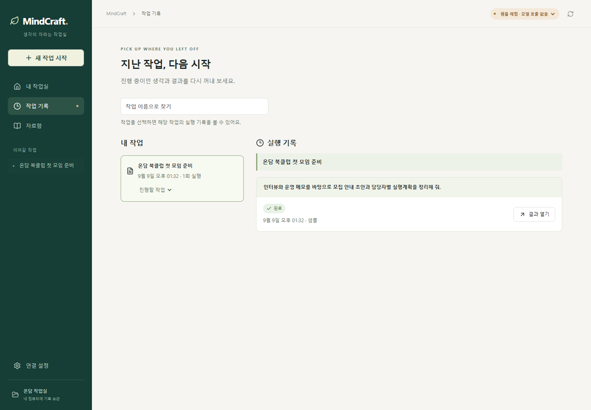
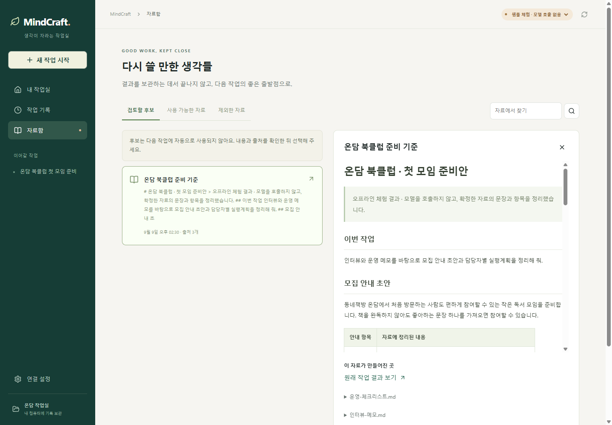
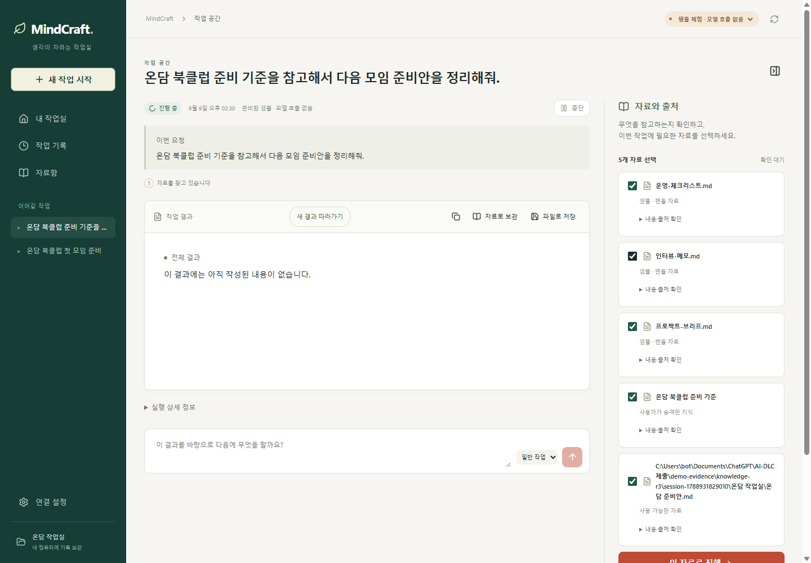

내 일을 이어주는 WINDOWS 개인 AI · 1분 소개
설정하느라 한참.
내 일은 언제 하죠?
실행 파일 하나에, 내 업무를 위한 AI 작업실.
자료 확인부터 문서 작성·저장·재사용까지 한곳에서.
● 9/9 첫 릴리스 완성 · Windows EXE 공개
딸깍 뒤의 다섯 가지, 먼저 한눈에.
설명할 때는 화면을 잠시 멈춰 표시하고, 동작이 시작되면 강조를 해제합니다.
영상을 불러오지 못했습니다. 위의 영상 파일 링크로 열어주세요.
영상의 사용 안내를 글로 읽기
- 샘플 시작: 처음이라면 준비된 예시를 눌러 작업 흐름을 익힙니다.
- 자료 선택: 오른쪽에서 참고할 자료를 확인하고 ‘이 자료로 진행’을 누릅니다.
- 결과 읽기: 가운데 결과 문서를 읽고 오른쪽의 참고 자료도 함께 확인합니다.
- 파일 이름: ‘파일로 저장’을 누른 뒤 저장할 이름을 입력합니다.
- 저장 승인: 경로와 변경 내용을 확인하고 동의할 때 ‘이번만 허용’을 누릅니다.
- 기록 재열기: ‘작업 기록’에서 이전 작업을 찾아 ‘결과 열기’로 다시 확인합니다.
영상은 작업 흐름을 보여주는 오프라인 샘플 녹화입니다. 실제 모델 연결·응답 검증은 별도로 완료했으며, 두 모델의 근거는 검증 기록에서 확인할 수 있습니다. 녹화 당시 UI와 현재 릴리스의 차이는 아래 최신 캡처를 참고하세요. 번호·테두리는 영상 설명입니다.
2026.09.09 · 최종 r3 EXE 실제 실행
지금 내려받는 앱, 그대로.
최종 배포 EXE · 실제 실행 캡처
처음 안내부터 결과 저장까지. 궁금한 화면을 펼쳐보세요.
01 처음이면, 안내부터

02 AI가 볼 자료, 내가 확인

03 내 자료가, 바로 읽는 결과로

04 저장하기 전, 한 번 더 확인

05 한번 한 일, 다시 이어서

06 쓸 자료는, 내용과 출처를 보고

07 지난 결과가, 새 요청의 자료로

최종 배포 EXE에서 직접 캡처했습니다. 화면 원본은 그대로 두고 제목·기능 태그를 덧붙였습니다. 현재 지원 범위 보기 ↓
딸깍 뒤에는, 이 다섯 가지.
시작부터 다음 작업까지.
한눈에 읽고, 궁금한 것만 눌러보세요.
01 / 쉬운 시작
에이전트를 몰라도,
내 일은 아니까.
실행 파일을 열고, 안내에 따라 모델과 자료를 연결합니다. 무엇부터 할지 모르겠다면 샘플 작업부터 해보세요.
조금 더 알아보기
1. 실행 파일 열기
실행 파일에 런타임과 필수 도구를 담았습니다.
MindCraft는 무엇을 하나로 연결하나요?
쉬운 시작부터 요청 확인, 지식 재사용까지. 내 일을 이어주는 작업 환경을 하나로 연결합니다.
도구를 하나씩 구성하는 부담을 줄이고, 작업 순서에 따라 결과를 확인합니다. 다시 쓸 자료는 골라서 다음 작업에 활용합니다.
하네스가 뭔가요?
AI가 일을 수행하는 데 필요한 도구와 절차를 뜻합니다. MindCraft는 쉬운 시작, 작업 절차, 지식 재사용, 모델 배정을 하나의 프로그램으로 연결합니다.
완성된 첫 릴리스, 무엇을 할 수 있나요?
문서 업무를 하나의 흐름으로. 자료와 출처를 확인하고, 문서를 분석·작성하고, 내용을 승인해 저장합니다. 작업 기록을 다시 열고 선택한 지식을 다음 요청에 활용합니다.
시작 방식도 내게 맞게. 처음에는 샘플로 경험하고, 내 업무에는 사용할 모델을 연결하세요. GUI·CLI·TUI가 같은 작업 기록을 사용하며 일반 작업과 복잡한 계획의 모델 역할을 설정할 수 있습니다. Airouter Qwen3.8과 DeepSeek-V4-Flash의 실제 연결·응답을 검증했습니다.
실행 파일과 검증 기록을 함께 공개합니다. 승인된 r3 요구사항에 따라 개발·테스트를 완료했습니다.
권한·모델 연결·실행 안내까지 자세히 보고 싶어요.
파일 변경 전 승인, 중단 후 재개, 자료의 출처와 재사용 기준을 포함한 상세 설명입니다.
제품 상세 소개 ↗ · 시작 준비 안내 ↗준비는 줄이고, 다음 일은 더 수월하게.
MindCraft의 다섯 가지 다시 보기 ↑